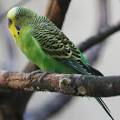
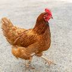
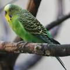
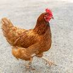

Historia del Reino Animalia
El Reino Animalia se remonta a más de 600 millones de años, con la aparición de los primeros organismos multicelulares en el periodo Ediacárico. Durante la explosión cámbrica, hace unos 541 millones de años, surgieron numerosos filos animales. La evolución de los vertebrados, desde peces hasta mamíferos, marcó hitos significativos, mientras que la colonización de la tierra llevó a la diversificación en hábitats. A lo largo del tiempo, los animales han desarrollado adaptaciones clave que les han permitido sobrevivir y prosperar en diversos entornos.

Importancia del Reino Animalia
El Reino Animalia desempeña un papel crucial en los ecosistemas, actuando como polinizadores, descomponedores y reguladores de poblaciones. Su diversidad contribuye a la estabilidad ecológica y al equilibrio de los hábitats. Además, los animales son esenciales para la agricultura, la medicina y la investigación científica, proporcionando recursos vitales y ofreciendo insights sobre la biología y la evolución. La conservación de la fauna es fundamental para mantener la salud del planeta y asegurar el bienestar humano.
Características del Reino Animalia
- Multicelularidad: Los animales están compuestos por muchas células organizadas en tejidos, órganos y sistemas.
- Nutrición heterótrofa: Los animales no producen su propio alimento y dependen de otros organismos para obtener nutrientes.
- Eucariotas: Las células de los animales tienen un núcleo definido y organelos rodeados por membranas.
- Capacidad de movimiento: La mayoría de los animales pueden moverse en alguna etapa de su vida, gracias a tejidos especializados como los músculos.
- Reproducción sexual (en la mayoría de los casos): La mayoría de los animales se reproducen sexualmente, mediante la unión de gametos masculinos y femeninos.
- Desarrollo embrionario: Los animales pasan por varias etapas de desarrollo desde el cigoto hasta la diferenciación de tejidos y órganos.
- Simetría corporal:
- Simetría bilateral: El cuerpo tiene dos mitades iguales (e.g., humanos, insectos).
- Simetría radial: El cuerpo está organizado alrededor de un eje central (e.g., medusas, estrellas de mar).
- Diferenciación tisular: Los animales poseen tejidos diferenciados como epitelial, muscular, nervioso y conectivo.
- Sistema nervioso: La mayoría de los animales tienen un sistema nervioso que coordina respuestas a estímulos del entorno.
- Homeostasis: Los animales mantienen un ambiente interno estable mediante regulación de temperatura, líquidos y eliminación de desechos.
- Diversidad: El reino Animalia es muy diverso, abarcando desde esponjas simples hasta mamíferos, aves y reptiles.
Ejemplos
- Mamíferos
- Aves
- Reptiles
 


